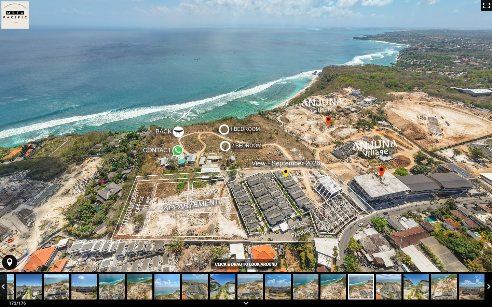
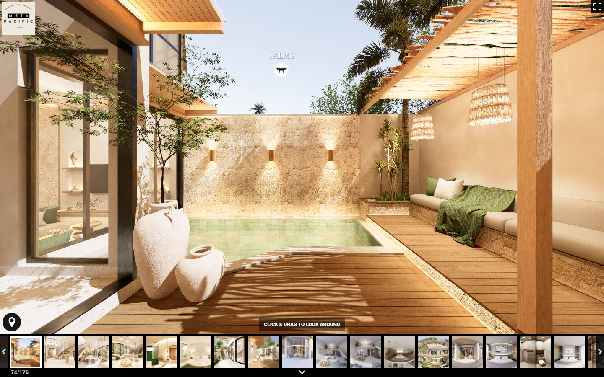

Find your bearings.
The coastline, the land and the way in. Start with the whole project before choosing a phase.
Film, photography & virtual tours.
For property and hospitality. From the aerial view to the details that make someone want to be there.
See the work
A film can show the atmosphere. An aerial can explain the setting. A tour lets someone choose where to look. We bring them together around the brief.
Property films, hospitality photography, founder interviews and social cuts. Plan the sequence, capture the place, then make each edit fit where it will be seen.
360° land mapping, virtual tours and pre-construction visualisations. Connect the overview to the details, with a clear distinction between what exists and what is proposed.
Identity, launch pages, content planning and enquiry systems. Give the film and tour a place to live, and give an interested viewer a useful next step.
A few ways into the work.
From the coastline to a room that is still on the drawing board. Choose a view, or follow the sequence below.
Explore Anjuna ↗The coastline, the land and the way in. Start with the whole project before choosing a phase.
Move into Palms. See the land and construction in context, with navigation points that lead to another view.

Explore a proposed villa interior. This is a rendered space, clearly separated from the captured site views.

Who needs to understand this place? What do they still need to see? The answers shape the route, the shoot and the edit.
Christobal Grego, founder of Meta Pacific, brings the conversation back to the project: the setting, the audience and what the work needs to explain.
Brief. Get the question clear.
Make. Plan, capture and build.
Refine. Edit for the audience and the channel.
Start with what the project needs now. We can scope a single production or plan a continuing body of work.
Film, FPV, aerial footage, a virtual tour and short-form assets for Bali developments with five or more units.
IDR 25,000,000Launch package. Confirm scope and current pricing before booking.Monthly production and design, or an annual plan for launches, content and digital work.
Scoped together.One-off films, shoots, tours and websites can also be quoted separately.Tell us what you’re working on.